Inspiratie
Mijn inspiratiebord
Bewaar projecten van Sealcleaning en materiaalkeuzes uit de configurator die u aanspreken. Dit bord staat alleen in deze browser — zonder account, en er gaat niets naar onze server tot u het zelf meestuurt met een aanvraag.
Voorbeelden
Laat je inspireren
Laat je inspireren door verschillende stijlen en afwerkingen. Wij bespreken samen de mogelijkheden en stemmen de definitieve materialen vooraf met je af.
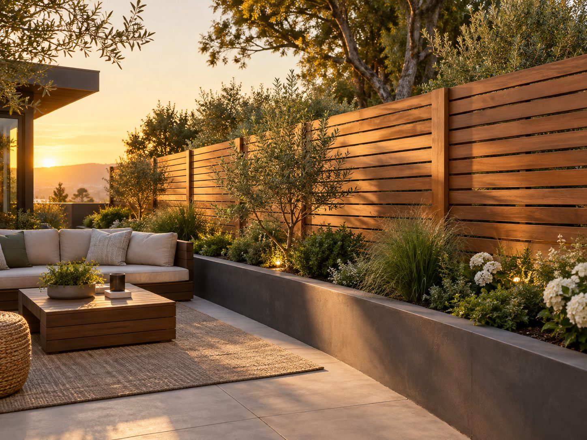
Warm hout, horizontaal 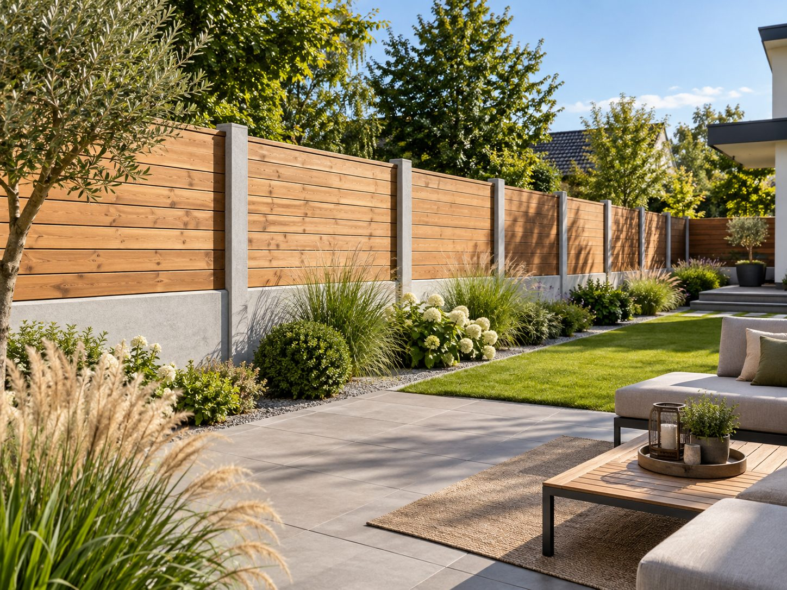
Hout tussen betonpalen 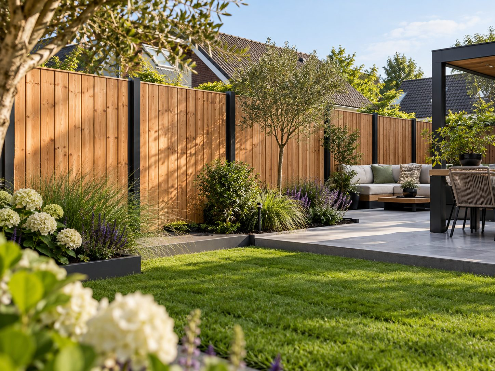
Verticaal hout, zwarte palen 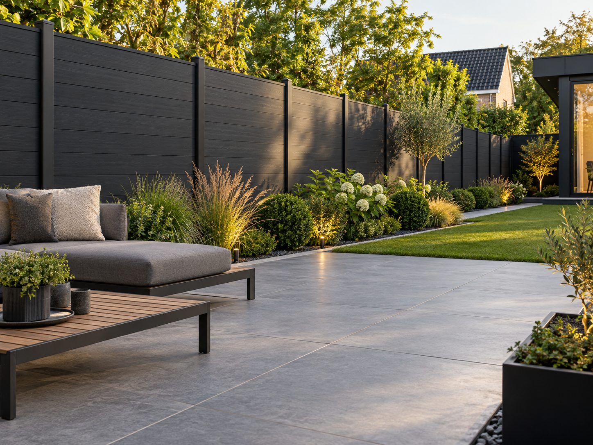
Antraciet composiet 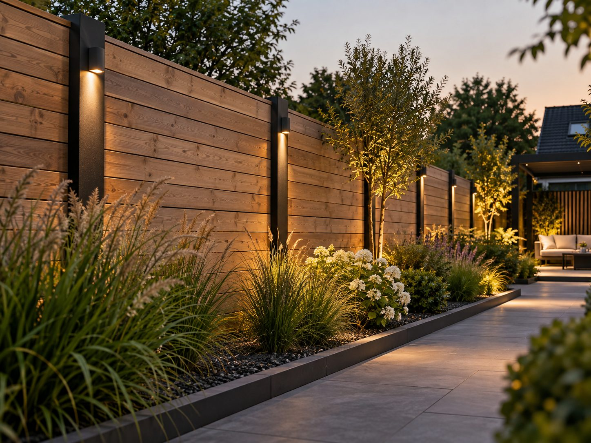
Hout met sfeerverlichting 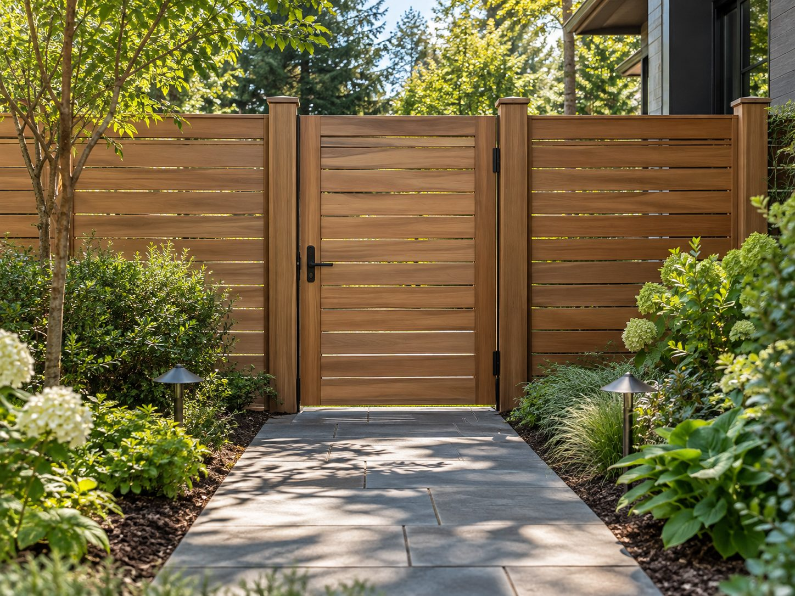
Houten poort met pad 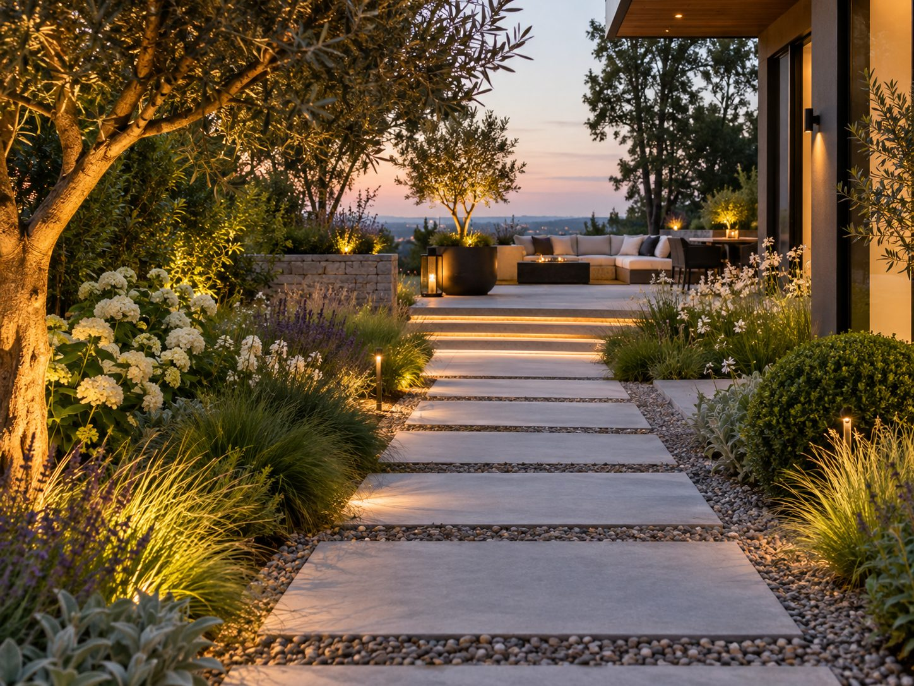
Pad van stapplaten 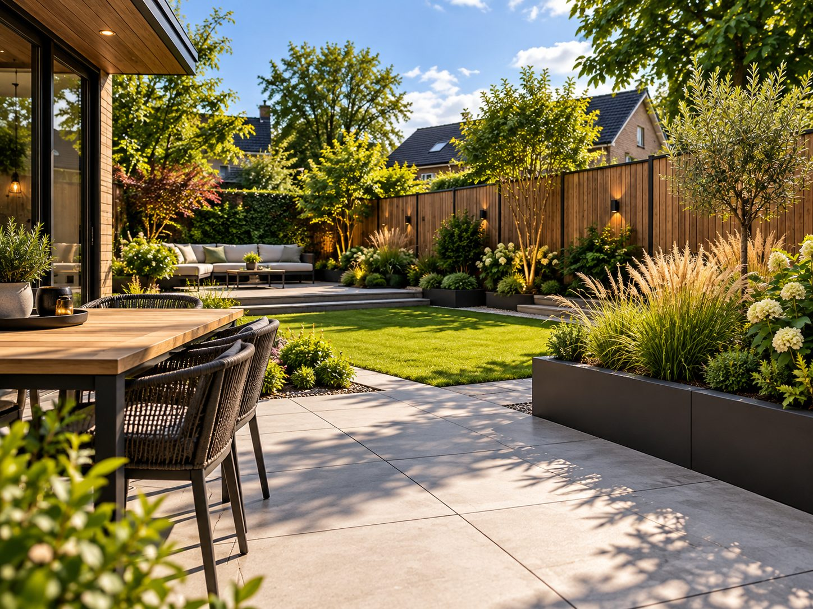
Terras met eettafel 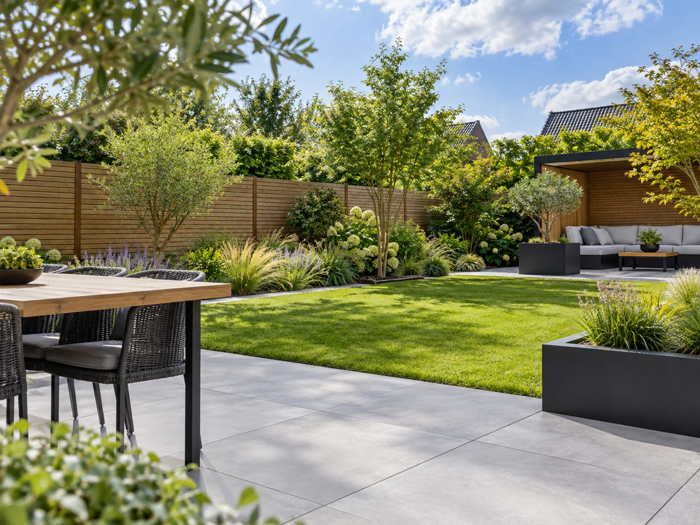
Gazon en terras 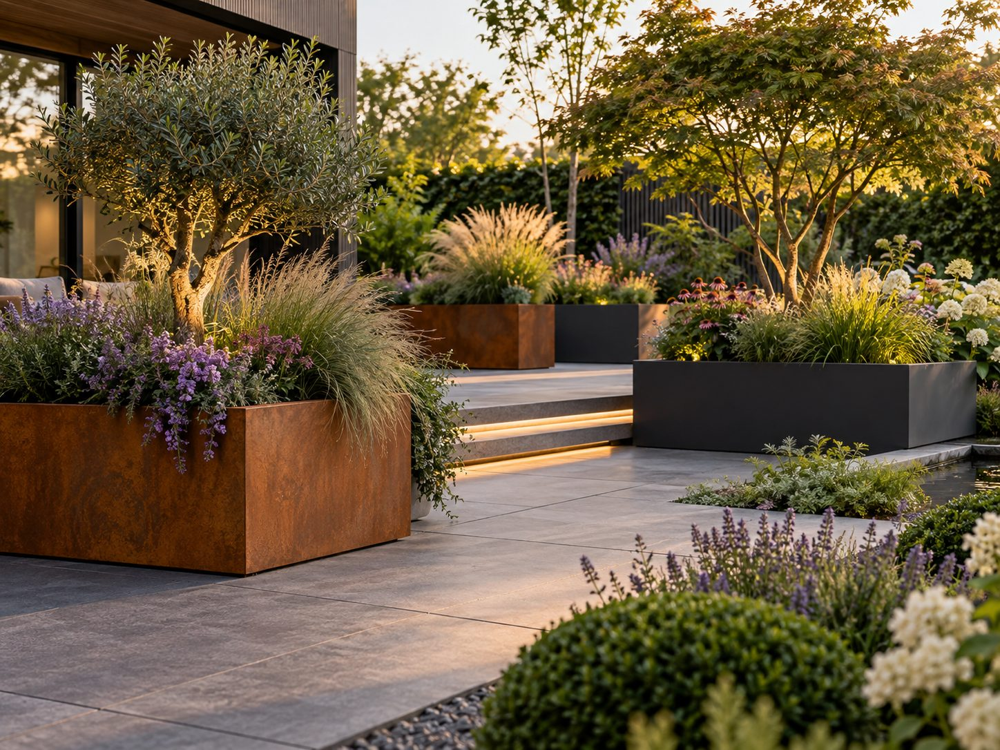
Cortenstalen plantenbakken 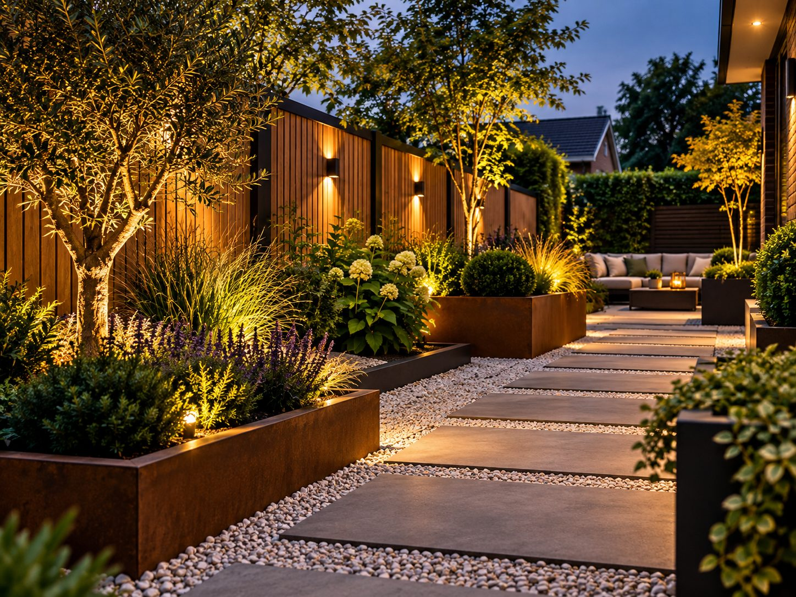
Bakken en grindpad 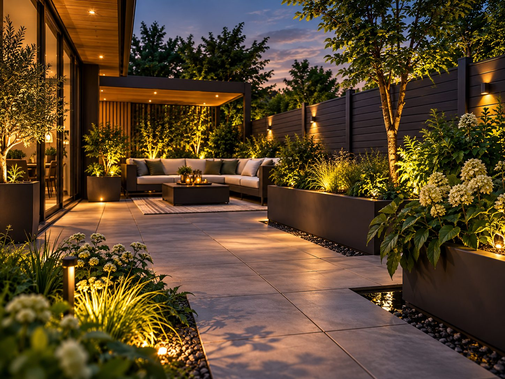
Donkere schutting en terras 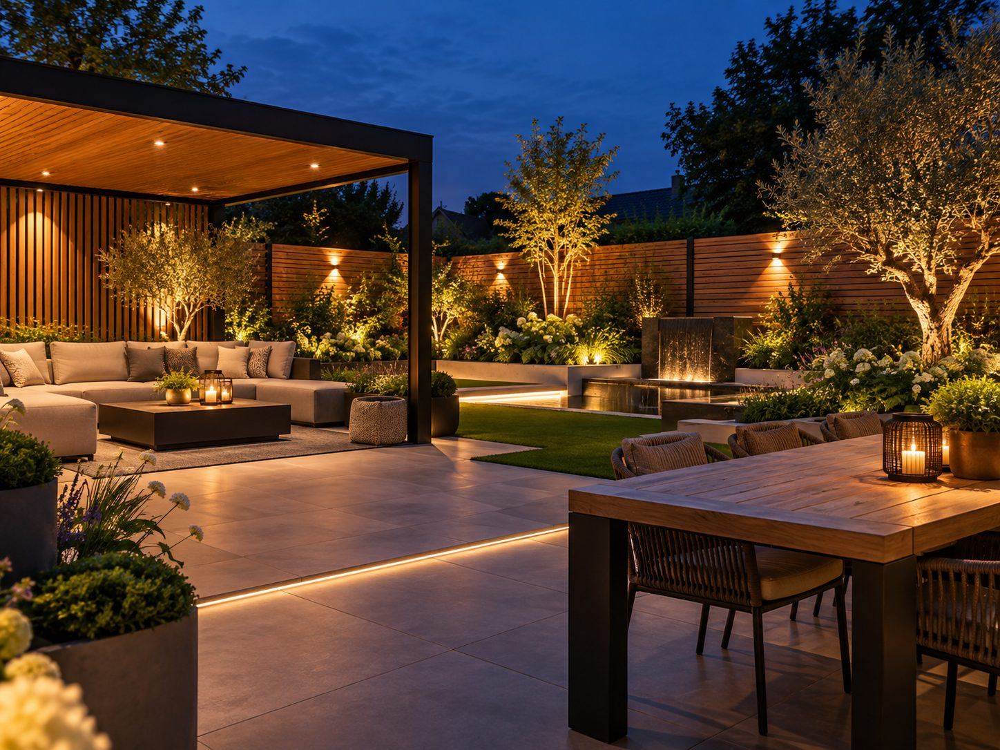
Overkapping in de avond 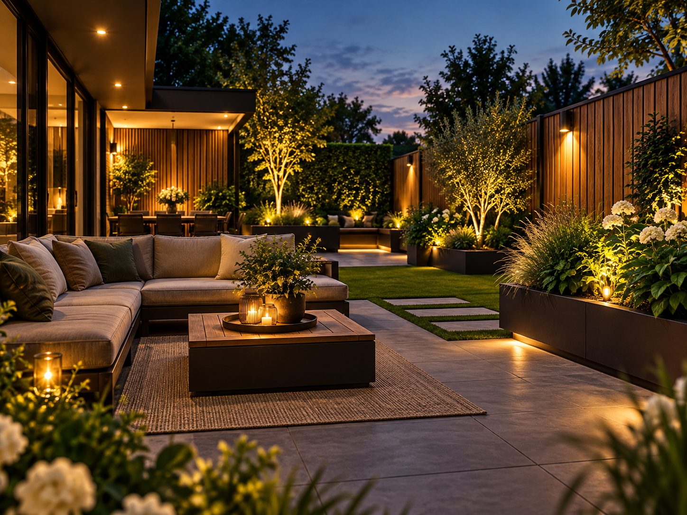
Loungehoek in de avond
Impressiebeelden: voorbeelden van mogelijke uitvoeringen, geen opgeleverde projecten van Sealcleaning en geen gegarandeerde exacte producten.
Inspiratiebord wordt geladen…